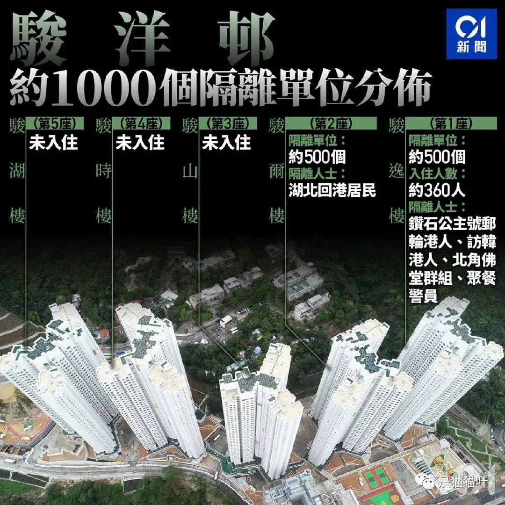
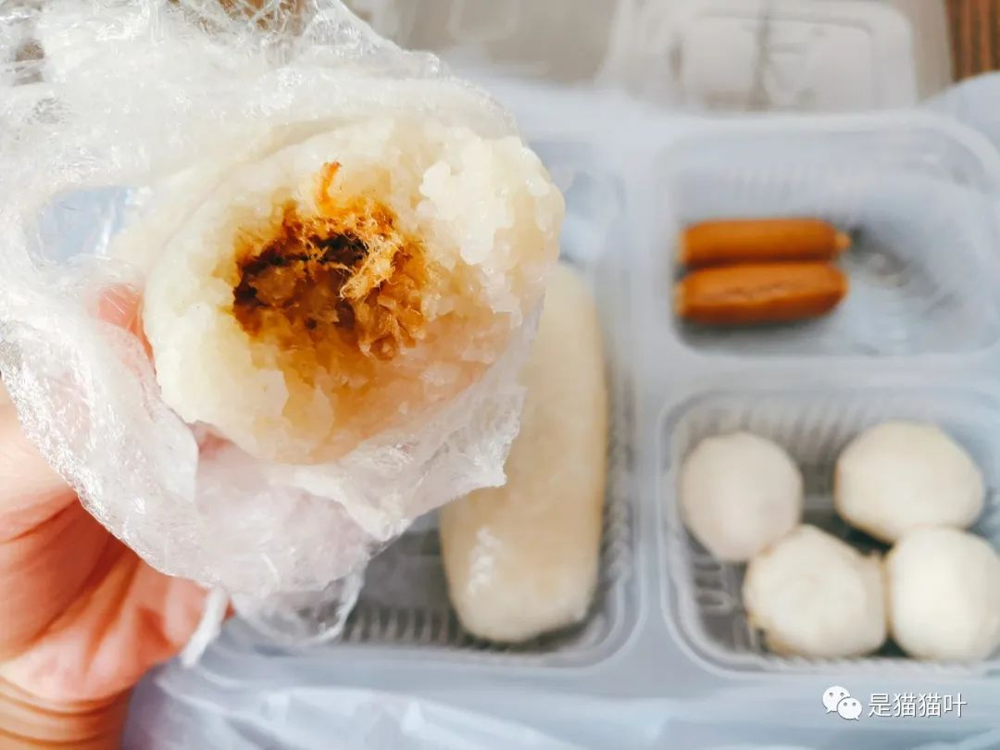
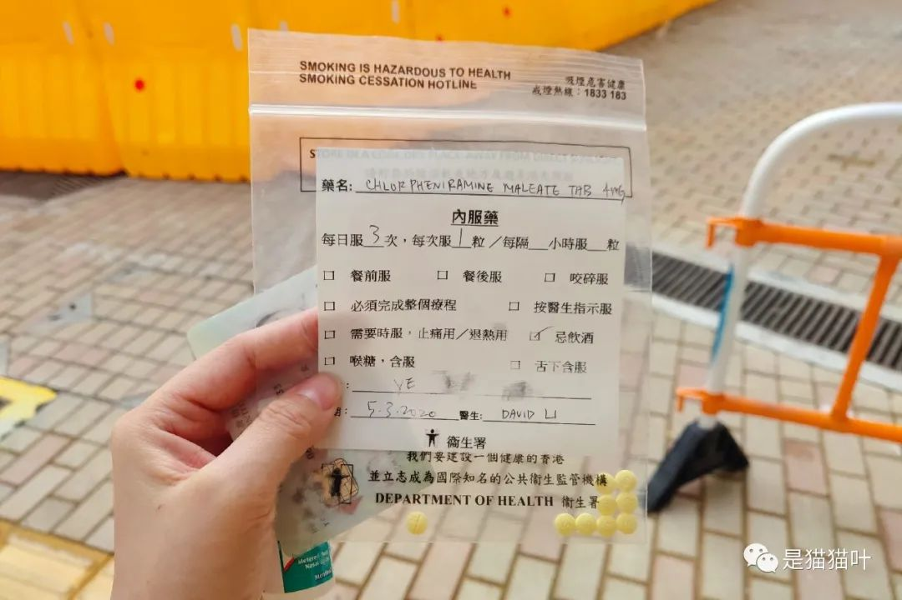
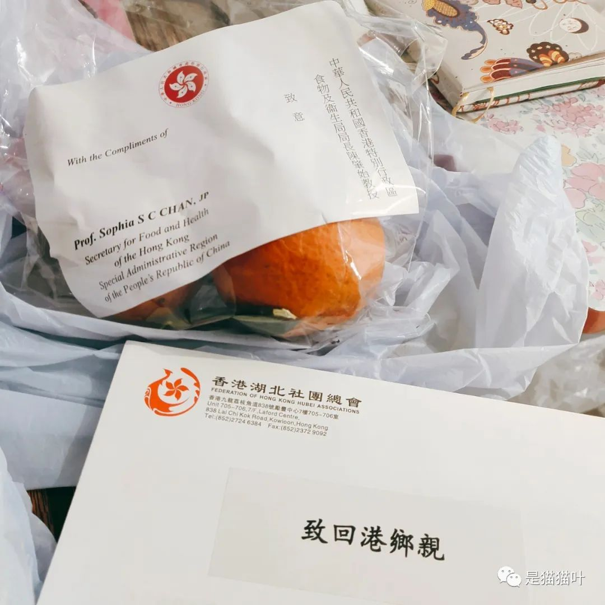
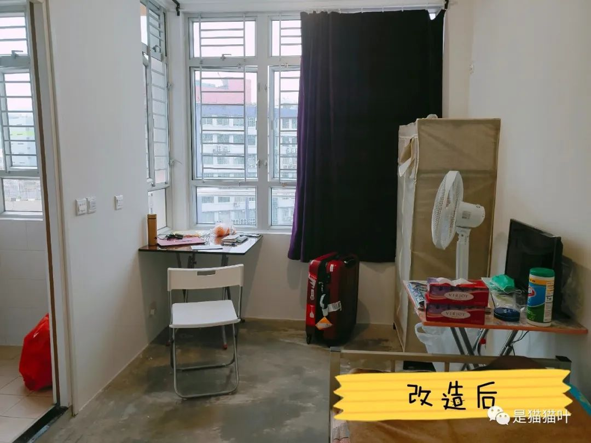
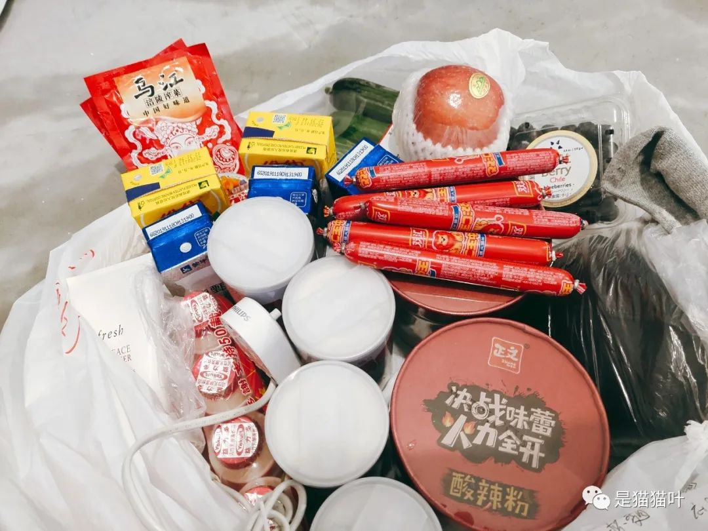

在武汉滞留41天，我踏上了回HK的路
原文链接 备份链接 没有想到终于定下决心动笔写下的第一篇（公众号）文章，是记录这样的一段经历。 2020年1月17日，临时决定回武汉，原计划初五（1月29日）回港。 可新冠肺炎发展地太快了。 1月23日，武汉封城。 3月4日，我搭乘首班 …
3月4日晚7点半，经过10个小时的路程，从武汉返回香港，到达了火炭的骏洋邨，开始为期14天的隔离生活。
位于火炭的骏洋邨是即将入伙的公屋。

从湖北回港的人士都住在第2栋。
我的房间在19层的其中一个走廊尽头。
回港之路记录——
(PS：还有一条Vlog在文末)
对于在香港生活过的朋友来说，独自住的这个房间面积并不算小了。读书时候几个人一起合租，人均面积不一定比这个单位要大。
高中时候开始住校的宿舍生活，六人间上床下桌，有独立卫生间但是没有热水，得专门去澡堂洗澡，或者有的男生选择冲凉水。
到大学时在北京的宿舍是3张上下床的六人间，再每人一张桌子一把椅子，另外配一个储物柜（我的在很高，经常要搭凳子上去拿东西）。女生东西多，十来个平方的空间走路都要怕把东西碰碎了。虽然有些挤，但是在帝都，东五环一年1500元的价格还包暖气水电配了空调和有热水的独立卫生间，还要啥自行车？
香港读研究生时，和广院的3个老同学一起合租了太和的一个一室一厅，每个月1万港币，人均2500。卧室里放了两张上下铺，睡在我上铺的姐妹，还是原来本科的配方。外面的客厅两张大书桌一拼，改造成公共学习空间和饭厅。
住得紧凑一些并没有什么，关键是和相处得来的室友一起，彼此磨合不同的生活习惯。（谢谢过往室友们对我这个天天督促大家做卫生的洁癖室友的包容）
从集体宿舍过渡来，对于香港的居住环境便比较适应。只是年纪增长，对个人私密空间的要求会逐渐增强。无论面积大小，精心布置过的小空间就是温暖的家啦。

房间门口的文件夹和checklist
到达骏洋邨约莫7点半，入住房间后吃到今天的第一顿晚餐：清淡的粥，红腰豆，蔬菜。几乎是连续戴了10个小时后，终于摘下了口罩。
行李等到10点多由工作人员送来房间门口，箱子上沾了点点雨水，此时第二班飞机才刚刚落地。
经验教训：充电插头尽量随身带，托运在行李里面的话，很有可能面临手机断电的窘境
有几位记者朋友提前几天在微信里联络我，问可不可以沿途用视频记录一下回港的过程（素材基本上就是前面的那一条）。
骨子里还是个媒体人，如今能够参与记录这一段经历，拍下一些影像资料，做个临时的“疫区记者”倒也是蛮有意义的。
陆续有亲朋好友和同事发来问候，说在新闻app或是电视机里认出了（戴口罩的）我，或者是听出来视频里的声音。骏洋邨也配了小电视，果然在TVB看到了“叶小姐”提供的视频。这样都能认出来的也真是真爱朋友了
按照注意事项的要求，今天穿过的衣服都脱下来用袋子封好，等到离开的时候才带回家，并建议用热水浸泡。第一天要用专门发的消毒液洗头洗澡。
没有牙膏，WhatsApp发给工作人员申请了补给，结果这一晚睡前就用清水刷牙了。
从滞留湖北的微信群、滞留武汉的微信群，现在又新建了骏洋邨的微信群，去机场的车友姐姐还建了个“咵咵武汉群”（“咵天”是武汉话“聊天”的意思）。
真真是生死之交，一场疫情之下，平时吵吵闹闹（非贬义，火热的性格使然）的武汉人，现在相当团结。聊聊天，讨论饭菜的样式口味、什么时候送来，缺什么物资怎么申请补充，房间里热水器不能开怎么办……没有群策群力解决不了的问题。
有个没有香港电话卡的营友无法拨打电话申请物资、也不会扫描二维码填写网上表格，微信群里马上有人在WhatsApp上帮她下了订单，之后还有工作人员送去了电话卡。
想到去机场路上同车的爷爷奶奶，70多岁，他们若是不会使用微信，在隔离的小房间这十四天会是什么样呢。
也有独自住进来的老人家不会打字，住在外面的儿女加入了我们的微信群。
灾难增强了人和人之间的共情，我们之间不是无关的。
把滞留的人从疫区接回来，接早了或是接晚了，使用了还未交房的公屋做隔离营，耗费人力物力…zf都是是面临很大的压力的。
微信群里大家互相鼓励，一定要好好吃饭好好睡觉。
我们争口气，都要健健康康地出去。

骏洋邨冷知识：每栋楼的名字怎么来的
原本晚上6点起飞的第二班飞机延误了，来得晚些的营友转钟了才入住，再等行李、收拾到近2、3点才入睡。从中午到凌晨，回家的路不容易。
虽有艰辛和不周到的地方，但想到外面这么多工作人员要安排几百个人的大小事宜，大家都多些体谅、尽量互相帮忙解决困难，也尽量降低要求。
把填好的餐单放到门口的文件夹，在硬硬的床上躺下。
床板只有一层薄垫子，真的硬 硬到骨头疼，只能尝试把被子卷了一小节垫在身下。
硬到骨头疼，只能尝试把被子卷了一小节垫在身下。
睡前，和很久没联系的老同学通了长长的视频电话，上一次打电话可能都有快一年的时间了。她从江苏回到上海准备复工，正在居家隔离。
我们谈论这两年彼此的一些变化和感悟，好像同龄的朋友在这个阶段、这两年都会有一些丧丧的情绪，对自我的怀疑，对前途的迷茫。
在武汉期间也是如此，很久都没有和老朋友打超过2个小时的电话了。
但隔离在家期间，有好多次这样的彻夜畅谈。
物理上的远距离，竟然也能拉近感情上的距离。
凌晨3:00左右方才入睡。
疫情期间，尤其是2月6日期待李文亮医生病逝的消息有转机的那个夜晚之后，我几乎每天都是这个时间才入睡，早上固定9点多起床开始线上工作会议。
我的生物钟固定在每天睡六个多小时，原本平时的睡眠时间是到1到8点。
疫情也把我妈的生物钟推迟到了这个时间段。

有些复古的毛巾上写：祝君安康
2020年3月5日
8:40左右门铃叫醒，在这里的第一顿早餐送来了。
工作人员把饭放在门口的凳子上。
按照订单，今早是饭团。饭团是糯米包油条的灵魂替代，小时候在户部巷口有一个铺子我常去买来过早，要怪味的，也就是既有白糖又有咸菜，甜咸搭配也被叫做“椒盐”。
早点摊越来越少之后，只能偶尔用饭团来替代。
2020年的第一顿糯米饭，来不及在武汉吃上，竟然是在香港的隔离营里吃到。

门铃再响，送来了报纸、口罩、医疗垃圾袋。
所有的生活垃圾/医疗垃圾统一装在医疗垃圾袋里，扭紧打结用塑料卡住，每天早上10点前放在门口。
又WhatsApp催了牙膏，终于送来了。


午饭后门铃再次响起，一位工作人员说要去抽血和做检测。
步行上到20楼的一个空房间，这是骏洋邨的另一个朝向，可以看到不远处的山景。
两个姑娘（粤语里的“护士”）分别给我做了抽血和鼻腔采样。
坐在凳子上，脑袋微微扬起，一支棉签（可能是）迅速而短暂地戳到鼻腔里面。
做完检测后，两位姑娘立刻把橡胶手套脱下扔掉，用酒精搓手液洗手。另一位工作人员带我回到房间门口。
不一会儿有工作人员来房间收健康问卷，嘱咐口探体温计每天自行测两次记录下来。
鼻塞和流鼻涕的症状还没完全消除，通鼻喷雾申请了还没补上，于是如实填写了这个症状。
过了两个小时，正在午睡被门口的电话叫醒。
因为鼻子的相关症状，要到楼下地面层看看医生。
专门辟出了一块区域用来看诊。
医生询问：症状有多久？ 答：一两年了
最近两周是否有加重？ 答：没有
对于我正在使用的鼻腔喷雾，医生说最好不要连续使用超过五天，另外开了鼻敏感的口服药。

在武汉偶尔鼻炎严重的时候，吃药都是没有多大效果的。
轮番吃过鼻敏感的药，后来也吃过一周消炎+中药通窍鼻炎片，还是差不多。于是每天睡前必用喷雾，否则无法入睡，白天尽量忍耐减少使用，但也怕是都有一些药物依赖了。
下午4点多又接到了电话询问鼻炎的状况，问题和医生的一样。
告知已看过医生后，电话里嘱咐了要每天量体温，并且以后每天都会打电话来问我的状况。
现在气温20来度，却还是偶尔鼻塞。
感谢万能的微信群，也有同样的鼻炎营友提醒了灰尘的因素。
新装修好的房间，水泥地的地面果然是有不少尘的，TA在房间铺上报纸撒了一遍水，效果还不错。
今天天气转晴了，不似昨天的阴雨，傍晚还看到了点点彩霞。
第二批飞机提前起飞了，下午5:00多就有新的营友住进来。

楼下的篮球场
这天第二批回来的一个学姐， 前一天晚上帮助接她的司机师傅联系了十几位同行的人，一直忙到深夜——司机师傅60岁，对于很多地方的路线并不是很熟。学姐帮师傅给大家一一打电话、加微信、添加群组，并且按照大家所住的区域重新进行接人的路线规划，这样才能更早到达机场。
有些恼人的是，有的人在最后关头因为各种原因放弃了搭乘包机，比如家里有老母亲要照顾。而一早报名登记的群友里，也有人很遗憾没能接到第一批回港的通知，只能等下一批的安排。
学姐和很多群友一起，晚上9、10点才吃到晚饭。
大家多次申请，也尽量忍耐，考虑到刚刚到来这几百人入住、检测、各种补充物资确实是不小的工作量。
2020年3月6日
早上开完早会，开始在微信上码字（前一篇）。
写到一半，电脑突然崩溃了。直接黑屏无法开机。唯一幸运的是之前写的草稿在网页版有临时保存的半成品。
血的教训：重要文件请随时保存，且最好双重备份在云端。
原本还正在思考，经历过这一场让我们至少40多天无法出门的疫情，究竟哪些东西是我们生活里不可分开的必需品，电脑就在此时挂掉了，还没办法送出去修。
电脑被迫从“必需品”的清单里划掉。
幸好还有一部iPad勉强替代，果然永远都要做好Plan B的准备。
新闻消息公布出来，我们第一天回港的200多人检测全部都是阴性。
大家由衷地开心，不枉费在家里憋屈的四十多天！
晚餐收到了卫生局局长慰问的水果，还有香港湖北社团总会的慰问信。

原本总会准备了包括老干妈茶叶点心牙膏牙刷等等的大礼包，但因为隔离营的诸多考虑（比如食品安全、拉拢xx等）和规定，这些大礼包只能在我们结束14天隔离之后再发给大家。得到这样的通知，大家更加渴望老干妈…
水果如今真的是宝贵。如果连续3天以上吃同样的水煮包菜胡萝卜混玉米笋，应该就能明白我们对生果的渴望。
统一安排的餐食倒也不是多难吃，但武汉人在家里重口味吃了40多天之后，突然一下改变都有些不太习惯。
有家属送来海底捞自热小火锅，晒到群里成了大家羡慕的对象。
如果能够流通的话，隔离营里最值钱的硬通货肯定是老干妈！
原本想着尽量忍忍，无非也就是比在武汉隔离的日子再降低一下生活水平。
但…两桶杯面吃完之后，还是耐不住和倪总商量了给我送物资的安排。
第一名想要的就是洗面奶 再除了食物之外，紧接着就是运动的衣服。
再除了食物之外，紧接着就是运动的衣服。
因为群友们开始号召一起做keep跳操了！不能落下进度呀
2020年3月7日
申请了拖把想做做清洁，看对鼻炎的症状有没有帮助，没想到竟然意外的送来了全套的清洁用品，甚至还有洁厕灵和马桶刷。
一场彻底的大扫除过后，把房间的布局做了简单的改动，可以坐在窗户边朝阳的方向，更加像一个“家”了。
前室友说：大扫除哈哈哈，不愧是你。


好像已经有些回南天的迹象，地板拖过之后一直都是湿湿的，许久未干，手洗的衣服也是，只能打开暖风机当作烘干机。
好消息是，鼻炎果然好了很多。
敏感的鼻子，简直就是检验空气质量的金标准。
下午群里的朋友看到了楼下出现救护车，有一个人拖着行李箱上车，大家很担心是不是出现了检测阳性的结果。
不久之后就从新闻上看到消息，第二天的第二班飞机里面有一位营友检测出来是阳性。
大家略微担心，尤其是搭乘同一班飞机的人。
不一会儿当事人在群里发言了：从1月20号回到武汉后，TA一直在家没有出门，唯一出门就是在去机场的路上。通知也并没有确定检测结果，上救护车前还发现性别弄错了。但是媒体已经报道了。
“真的很抱歉，我完全没有任何不适的地方，希望每个跟我同一班机的朋友能健康平安。”
没有人指责。群友们都在鼓励、安慰TA，祈祷这是虚惊一场，也祝福我们所有人。
感谢倪总送来了物资！
生活水平得到了质的飞跃！
亲属送物资来都要在楼下的民安队登记、安检，比如剪刀这样尖锐物品的物品和没有包装的食品是不可以送进来的。


最最遗憾的是海底捞自热小火锅没能通过检查， 也没有具体的原因，就是不让送

疫情结束后你最想做的第一件事情是什么呢？
很多人都应该一样，是想吃火锅吧。
火锅是很多人聚在一起吃才更加有味道的，圆圆的火锅，是团聚。
2019年12月31号，我的跨年庆祝方式就是约了几个朋友一起，在深圳吃了最丰盛的一顿海底捞。
这个冬天，没有了团年饭，没有了拜年，没有了开年仪式…太久太久没有和很多人一起了。
也许我们真正想要的，是热热闹闹的“团聚”。
我们渴望能够早点重聚，隔离营里的新朋友们也是一样。
虽然是隔离，但是这场共同的战役把所有人拉到了统一战线。
每天在微信群里听听乡音，用武汉话咵天，甚至看大家唱歌跳舞，就是最大的快乐源泉！
我们并没有因为隔离切断彼此之间的联系，
而是重新连接
就像，
这两天因为之前的文章而加了微信的新朋友们。
谢谢你们的关注和认可，愿意陪我聊了好几块钱的天
谢谢读到这篇碎碎念的末尾的你。
期待疫情快些结束，我们都可以尽早相聚！
Vlog：隔离日记Day123
原文链接 备份链接 没有想到终于定下决心动笔写下的第一篇（公众号）文章，是记录这样的一段经历。 2020年1月17日，临时决定回武汉，原计划初五（1月29日）回港。 可新冠肺炎发展地太快了。 1月23日，武汉封城。 3月4日，我搭乘首班 …
原文链接 备份链接 我等待着， 等风雨经过，等我们相见， 你微笑仰望着天， 我们一起种下心愿。 —— 张学友《等风雨经过》 文 / 麦兜妈 公号 / 兜爷麻麻不睡觉 方舱最后的时光 在我19号上篇文章发出时，是我进入方舱的第7天，当时我已 …
原文链接 备份链接 村委会将“福”字作为封条贴在门锁上。受访者供图 本文约3577字 预计阅读时间9分钟 作者 徐竞然 编辑 秦珍子 秦筝和妹妹在救护车上度过除夕夜。 车厢里，坐在对面的医护人员身着防护服，没有一寸皮肤暴露在外，秦筝隔着 …
原文链接 备份链接 从武汉离开的时候，他迎面看到有好多卡车正在往自己来的地方去，他没有办法去描述那一瞬间的感动。「我们可能都是一样的……那种感觉好像怎么都说不上来。」大概都是再普通不过的普通人，所以才选择了逆行。 文｜****林燕 编 …
原文链接 备份链接 文/麓泉 编辑/大风 从1月23日算起，武汉宣布封城已经大概过去了半个月的时间。 一时间，湖北乃至其中的任何一个城市，都成了闻之色变的词语，与湖北有关的人成了全国各地区无差别“歧视”的对象。 封城后的武汉，图源于微博林 …